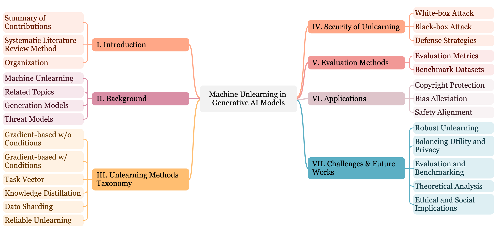

Work

A Survey of Machine Unlearning in Generative AI Models
In this survey, anchored in generative models, machine unlearning approaches are reviewed, categorized, and discussed comprehensively and systematically. Existing unlearning approaches are classified into gradient-based techniques, task vectors, knowledge distillation, data sharding, and reliable unlearning methods. Apart from previous works, this survey extends the review of attack methods that aim to exploit the vulnerability in generative models and assess the robustness of these unlearning methods. In addition, popular metrics and datasets in machine unlearning research are summarized and evaluated based on effectiveness, efficiency, and security. Finally, we shed light on the future directions of this emerging research topic by discussing applications, highlighting challenges, and exploring research frontiers for the current machine unlearning community and the new investigators to come.